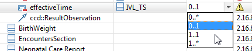

Constrain the multiplicity of a template attribute to be more
restrictive than the same attribute in its parent class.
You can only constrain an attribute with a multiplicity that is more
restrictive than its parent CDA class or template. For example, you can
constraint
0..1 to be
1..1, but you cannot change
1..1 to be
0..1.
-
Select the table row for the attribute you want to constrain.
-
Select the Multiplicity table cell in that row using the mouse or
by navigating with the keyboard arrow keys.
-
Either double-click in that cell or press Enter to show a list of
multiplicity options, or type into the cell for other specialized constraints,
e.g.
1..2
